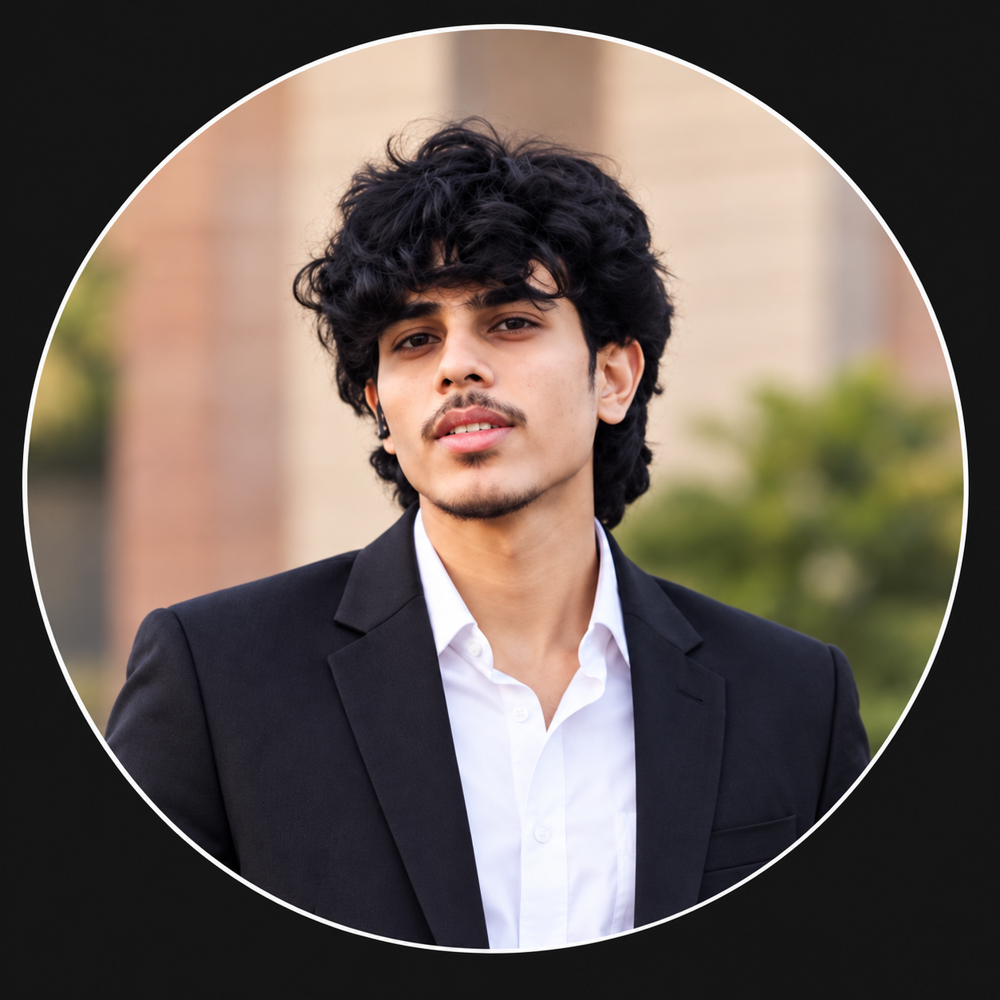

01
Swastha Parivar
A healthcare ecosystem connecting families and medical professionals through real-time health tracking, appointment scheduling, telemedicine, and role-specific access.
Priyanshu Tiwari · Greater Noida, India
Computer Science student and full-stack engineer focused on reliable AI-driven applications, backend architecture, and secure digital products.

02 / perspective
I’m Priyanshu, a B.Tech Computer Science student at GL Bajaj Institute of Technology. I enjoy turning complex domains into products with thoughtful workflows and sturdy technical foundations.
03 / selected work
Each project foregrounds the system and implementation, rather than hiding useful detail behind a carousel.
A healthcare ecosystem connecting families and medical professionals through real-time health tracking, appointment scheduling, telemedicine, and role-specific access.
An EdTech companion with a student dashboard, learning modules, progress tracking, and an interface designed around the day-to-day study workflow.
A rail-network system modelled as a weighted directed graph, designed to recompute paths dynamically and minimise cascade delays as conditions change.
An anomaly-detection system for financial risk, combining a Random Forest classifier with Isolation Forest methods and an analyst-facing dashboard.
A multi-role healthcare platform that pairs secure routing and relational data with automated monitoring for changes in patient vitals.
04 / capability map
Not a proficiency chart: a practical view of the layers I use to ship work.
Clear interfaces that make complex systems usable.
Full-stack workflows, identity, and service logic.
Models where prediction or anomaly detection helps.
Data, security, and deployment fundamentals.
05 / experience
SoftPro India
Developed modules for a Hospital Information System: appointment management, feedback features, role-based authentication, secure routing, and automated record workflows.
Rotaract Club of GL Bajaj
Organising campus events and student initiatives. Recognised as Emerging Leader (2024) for leadership contributions.
06 / continued learning
Supervised Machine Learning: Regression & Classification · Jan 2026
AWS Cloud Foundations; cybersecurity, network security, and cloud security fundamentals.
Cybersecurity Essentials, Certified Blue Team Practitioner, AI/ML internship, and AI foundations.
07 / contact
I’m open to internships, full-time roles, and conversations about thoughtful software systems.